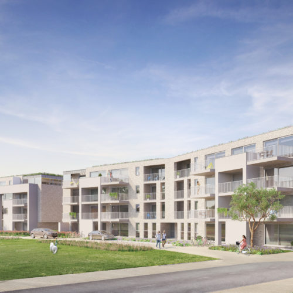
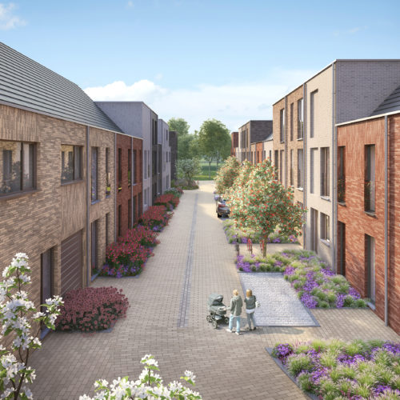
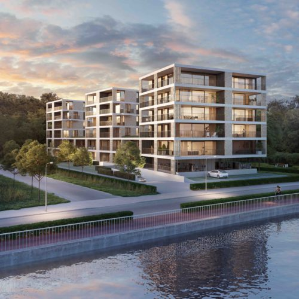

Wonen op wandelafstand van winkels, openbaar vervoer, scholen, restaurants, culturele centra, werkgelegenheid, sportcentra en groen, dat is wat wij bieden. Onze locaties zijn steevast slim gekozen, vlot bereikbaar en in de onmiddellijke omgeving van invalswegen. UrbanLink kiest bewust voor betaalbare en doordacht ingerichte woonprojecten.
Een woning op maat van zijn omgeving en ingericht volgens de wensen van onze klanten, met aandacht voor duurzaam, energiebewust en functioneel bouwen.
Een optimale combinatie, die zich laat vertalen in een mooie waardestijging van uw vastgoed. Kortom, UrbanLink biedt mensen een leven dichtbij alles.
Onze woningen zijn stuk voor stuk gelegen op toplocaties. Hun doordachte architectuur gaat samen met een degelijke afwerking. U kunt de appartementen en woningen zelf bewonen natuurlijk, maar ze zijn ook bijzonder geschikt als beleggingsopportuniteit. Benieuwd naar onze lopende woonprojecten in uw buurt?
Mensen, geen bakstenen, vormen de spil in al onze projecten. UrbanLink bouwt harmonieuze woonprojecten vanuit het standpunt van de toekomstige bewoners, om op die manier op termijn een sterke meerwaarde te kunnen garanderen. Ook voor huurders van onze investeerders willen wij een aangename woonomgeving creëren waar iedereen zich thuis voelt.
Cultuur, sportfaciliteiten, supermarkten, kinderopvang, scholen … Alles ligt binnen handbereik, want de stadscentra bevinden zich vlakbij en zijn makkelijk te voet, met de fiets of met het openbaar vervoer te bereiken. Ideaal voor wie houdt van de stad en een vlotte toegankelijkheid op prijs stelt.
  